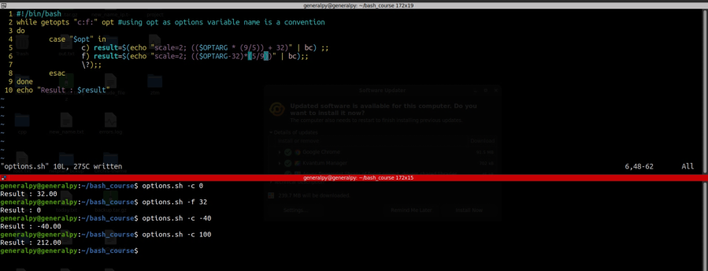

Getopts command is used to get and parse options in a bash script. Options modify how a bash script works.
Syntax :
getopts optstring optionsvarOptstring is a string containing all options. If an option has argument, then we add : just after the optstring.
"c:be:"Above is an example of optstring. Here c and e have options.
getopts reads a character from the optstring and then sets the variable's value equal to it. OPTARG stores the value of argument if any. getopts read option from command line(command input by user) and matches it from optstring. If match, then the option is stored in optionsvar else ? is stored in it. It just reads 1 option and then exits. To read multiple options we have to use getopts with a loop.
ls -l -aAbove is ls written with options. getopts will first read and match -l and then in next loop will read and match -a.

Above scripts convert celcius to farenheit and vice versa. Our optstring here is “c:f:” and both contains arguments. We store that in opt variable which is conventional name for getopts variable. We used case to match arguments then.